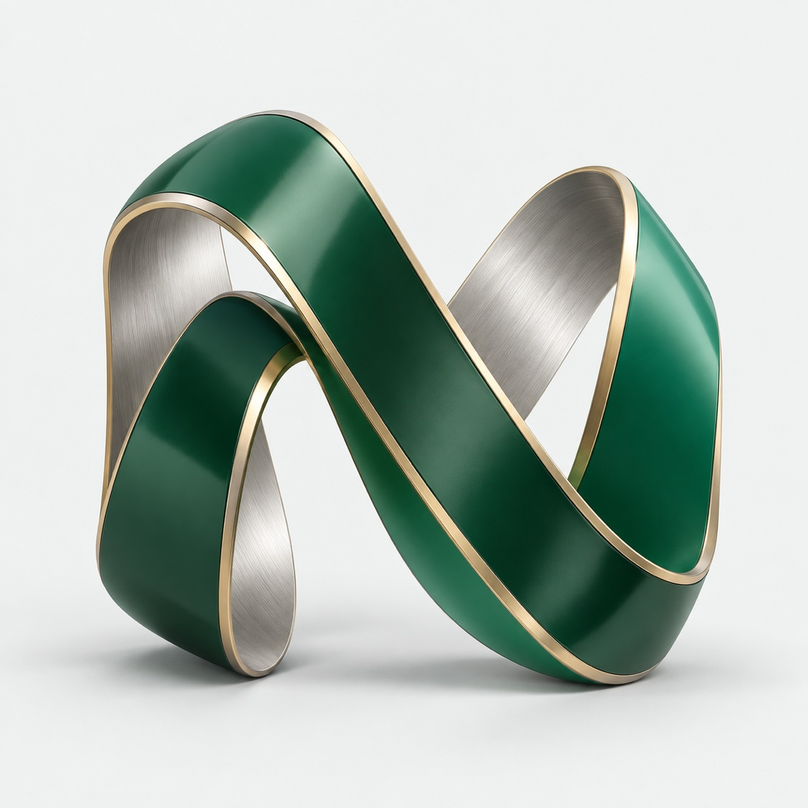

Web va platformalar
Brendingizni ifodalaydigan saytlar. Mijozlaringiz qaytib keladigan web-ilovalar.
NOVERA / DIGITAL ENGINEERING
Biznesingizning keyingi bosqichi uchun web, mobil va aqlli tizimlarni yaratamiz.
Strategiya. Dizayn. Dasturlash.
Bitta yaxlit yondashuv.

Murakkablik ortida.
Sodda tajriba.
01 / NIMA QILAMIZ
Bir sahifali saytdan murakkab platformagacha. Texnologiyani vazifangizga qarab tanlaymiz.
Brendingizni ifodalaydigan saytlar. Mijozlaringiz qaytib keladigan web-ilovalar.
iOS va Android uchun qulay, ravon va biznesingiz bilan birga o‘sadigan ilovalar.
Tarqoq tizimlarni bog‘laymiz. Takroriy ishlarni aniq jarayonga aylantiramiz.
Ma’lumotlardan foydali xulosalar. Jamoangiz vazifalariga mos AI yordamchilar.
TEXNOLOGIYA — VOSITA. MAQSAD — SIZNING BIZNESINGIZ.
Avval maqsad va jarayon. Keyin texnologiya va kod.
Murakkab tizim ortida ham tushunarli tajriba bo‘lishi kerak.
Yangi vazifalar uchun kengaytiriladigan arxitektura.
02 / QANDAY ISHLAYMIZ
Nima qilinayotgani, nima uchun va keyingi qadam qanday — birgalikda aniqlaymiz.
Birinchi qadamni qo‘yamiz ↗Maqsad, auditoriya va mavjud jarayonlarni o‘rganamiz. Vazifa chegarasi va ustuvorliklarni belgilaymiz.
NATIJA / Aniq loyiha brifiFoydalanuvchi yo‘li, interfeys va texnik arxitektura. Kod yozishdan oldin yechimni birgalikda ko‘ramiz.
NATIJA / Dizayn va loyiha rejasiYechimni bosqichma-bosqich quramiz. Har iteratsiyada natijani ko‘rsatib, fikringizni olamiz.
NATIJA / Sinovdan o‘tgan mahsulotYakuniy tekshiruv, joylashtirish va topshirish. Keyingi rivojlantirish rejasi alohida kelishiladi.
NATIJA / Ishga tayyor yechim03 / SAVOLLAR
Vazifalar, integratsiyalar va hajmni aniqlagandan keyin taklif tayyorlaymiz. Narx hamda ish tarkibi boshlashdan oldin kelishiladi.
Albatta. Dastlabki suhbatda g‘oyani foydalanuvchi ehtiyoji, asosiy funksiyalar va birinchi bosqichga ajratamiz.
Ha. Avval mavjud kod va arxitekturani o‘rganib, takomillashtirish yoki integratsiya yo‘lini taklif qilamiz.
Muddat loyiha hajmiga bog‘liq. Brifdan so‘ng bosqichlar, topshirish mezonlari va vaqt rejasini kelishamiz.
KEYINGI QADAM / BIRINCHI SUHBAT
Qisqacha vazifangizni yozing. Birinchi suhbatdan yechim yo‘lini birgalikda aniqlaymiz.